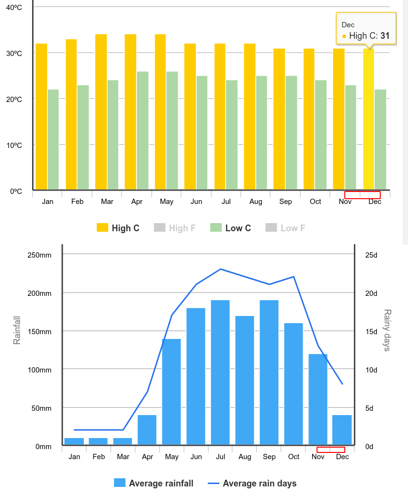

Spending 1 month in Ho Chi Minh City (Saigon)
Ho Chi Minh City - previously known as Saigon and renamed after communist revolution leader of vietnam after great reunification of South and North Vietnam.
Both names are very much accepted, interchangable and there doesn't seem to be any political tension regarding the name. In fact there's very little political tension regarding anything in general.
Weather
We arrived at HCMC in late November, just 10 hours ago we were in snowy cold Helsinki and now we stepped out of the airport and instantly felt the heat and humidity of south vietnamese weather. It was really humid. I've tried to research statistics for the blog but I felt that the numbers just failed to represent how it actually feels - so you'll just have to take my word for it on this one.
Temperature in Ho Chi Minh City (and sounds Vietnam in general) is very much the same all year round, however some days are very humid, making sweat hard to evaporate thus making you feel that it's significantly hotter than it actually is.
Most of the inside places are running heavy air conditioning so it was pretty funny to see people wearing hats and winter jackets when it's 30° outside. Movie theaters in particular are chilly, so packing a hoodie is vital!
Regarding rain - Saigon has two seasons: wet and dry. We arrived at the end of November when wet season was at the very end thus we haven't encountered much rain. There were few "flash pours" when there was big bursts of rain coming down for few minutes but it was really rare.
Saigon in general was pretty foggy and overcast most of the time, except for early morning where occasionally you could get a real sun-burn!
Air Quality
If you've seen and/or been in Asia you're probably familiar with the smog, dust and facemasks people wear. Saigon being a huge ass city that is still under heavily development is no exception. It's smoggy, dusty and humid - but for some reason it feels ok. I don't particularly have a sensitive nose but my acne wasn't too happy about the the sudden changes!
Where to stay
We stayed Tanh Binh district, a developing district near the district 1, which is center district of Saigon. We primarily chose it because we found a good deal on airbnb and it was close to district 1. After spending there a month I wouldn't recommend it and instead recommend choosing D1, D3 or D5 which all near each other.

Quick tip: if you want to visualise the districts on the map just use term `district x hcmc` in google maps
The problem with Tanh Binh district is mostly the traffic. Saigon is notorious for messy traffic but Tanh Binh district is completely impossible to navigate on foot. Not only that but unless you take uber/grab bike it'll take you at least half an hour to get to district 1. Also vegetarian food (and good food in general) was difficult to find. There are some advantages though:
- Drinks and food is cheaper at cafes compared to more central districts.
- 10 min uber ride close to nice shopping centers like "Saigonres Plaza" and "Pearl Plaza".
- Several decent PC bangs in the area.
Personally if I were to go for another month I'd stay in District 3 - it's close to D1 and has a bunch of activities in it on it's own, so you have a bunch of things in walking distance.

full map by codiemaps.wordpress.com
where and what to rent
For short/medium term rents we pretty much came down to three places:
- airbnb - while it is pricier than looking than majority of other sources it's well worth the convenience tax. You can see the amenities apartments have, exact amount you'll be charged and a bunch of other info. Usually places have discounts for weekly and monthly rents and you can even contact host and ask them to reduce that. Also you should be on a lookout for new postings, they're a bit riskier but can end up being significantly cheaper (that's were we stayed).
- hotelscombined - it's a hotel aggregator and you could potentially find good deals, especially if you look around 1-2 weeks before your trip. To add to that hotels usually come with decent breakfast.
- expat - a lot of cheaper options, though it's a bit hard to navigate and good part of postings are long duration only (2 months+ usually).